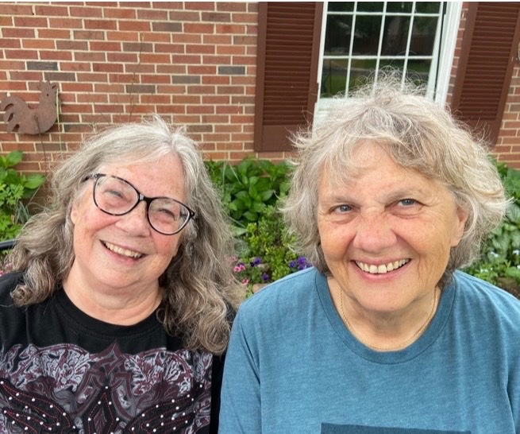
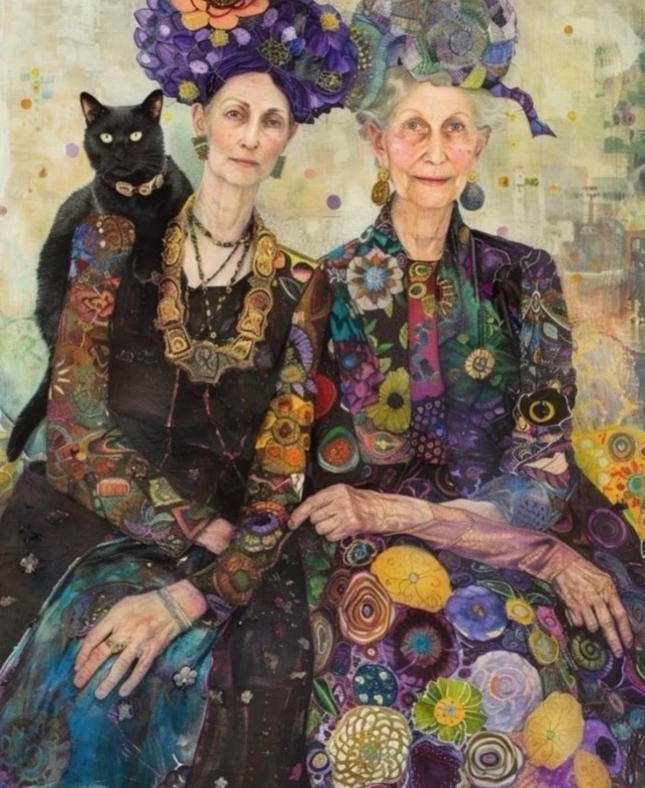
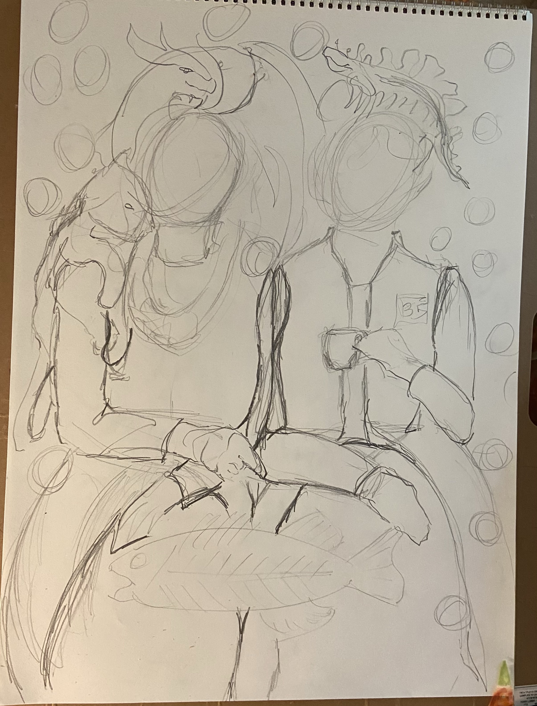
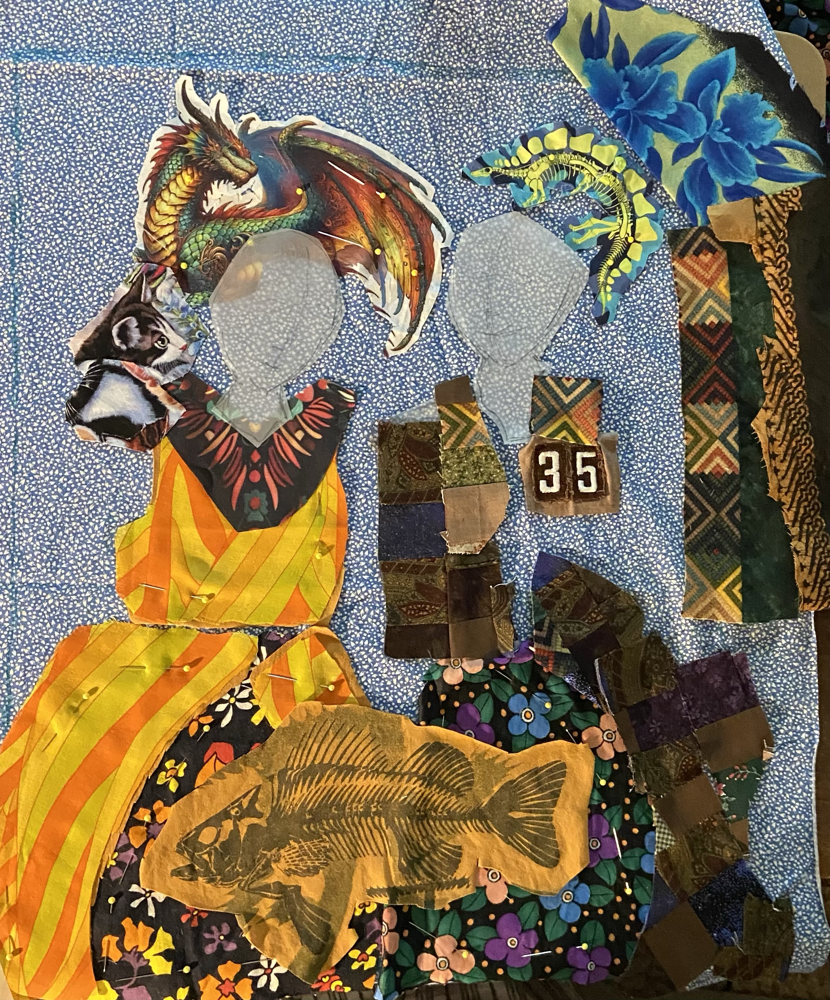
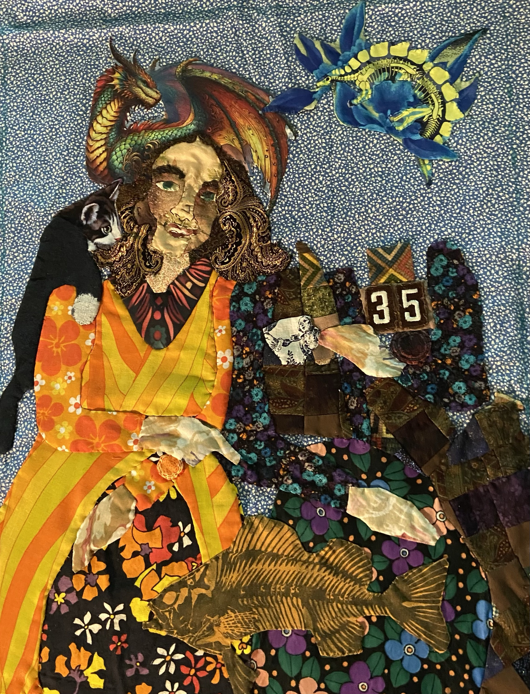
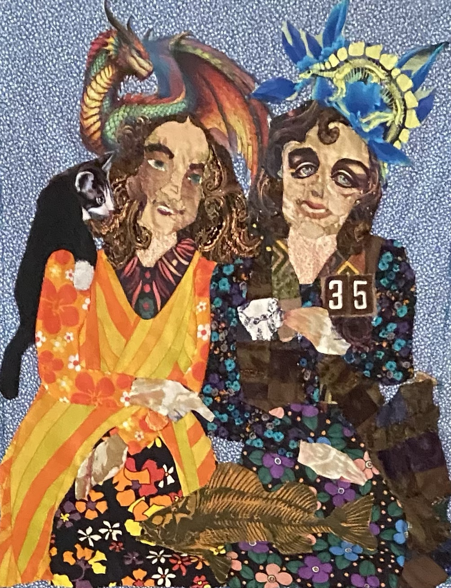

Kelly Jones Milligan Collection
Friends
A textile portrait of Karen and Kelly, built from childhood memories, shared objects, and a friendship that found its way back.
Karen & Kelly
A friendship stitched back together.
Karen and Kelly were childhood best friends. When they were little, they even created their own club, the K&KACC: the Karen and Kelly Arts and Crafts Club. Years later, Kelly found her old Brownie uniform and decided to send it to Karen. That small act brought them back into each other's lives. Now they text every day.
Friends is full of that history. It is not simply a picture of the two of them. The materials and symbols carry pieces of their lives together, from childhood clothes to one of their earliest shared memories.

Inside the piece
Small Easter eggs, decades of history.
The dress
The fabric used for Karen's clothing in the piece comes from the first dress she ever made, in sixth grade.
The 35
The number 35 comes from Kelly's Brownie uniform, the same uniform Kelly later found and sent to Karen when the two reconnected.
The fish
One of their earliest memories is from when they were five. Karen was eating dinner at Kelly's house and, for the first time, was served a fish with the bones still in it. That memory became the fish in the piece.
K&KACC
The Karen and Kelly Arts and Crafts Club began when they were children. In the finished piece, the background rectangles are books, and one of them is stitched with the letters K&KACC.
The tomato can
In the top left corner, there is a tomato can. It refers to summers at Camp Wakatomika, where Karen's dad would write her letters and jokingly use a different camp name on the envelope each time. One of those names was Camp Onecanof Tomatoes.
Memory & inspiration
The history behind the portrait.

The making
From sketch to finished piece.



